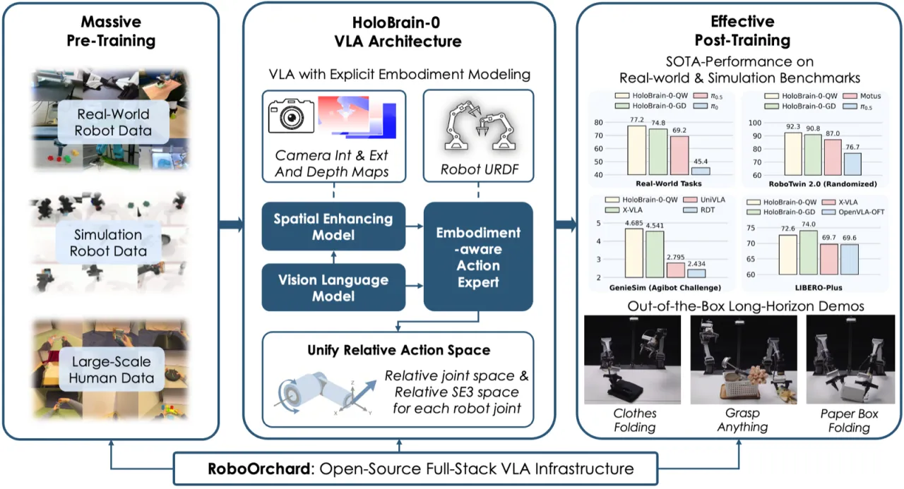
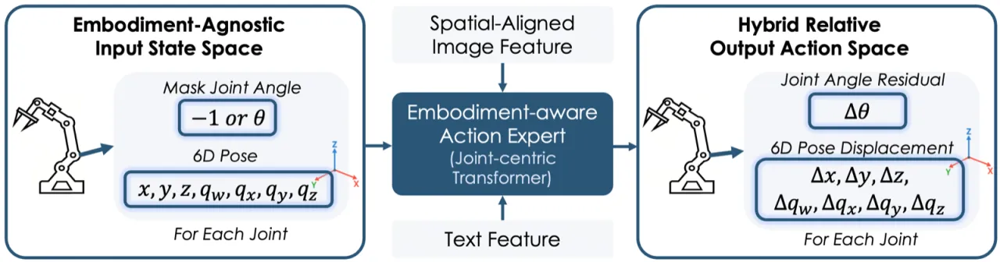
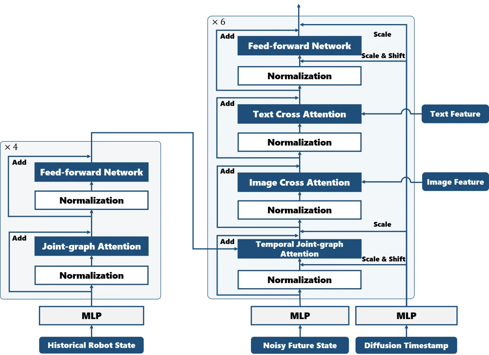
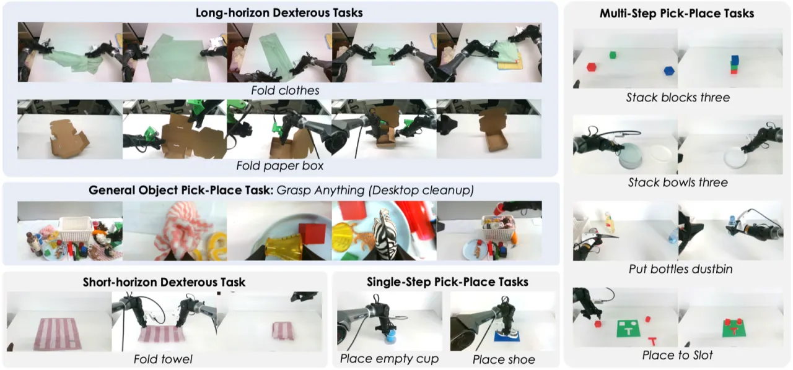
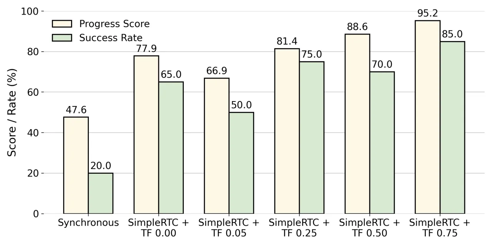

HoloBrain-0 是一个视觉-语言-动作（VLA）基础模型，将多视角相机参数与机器人运动学信息融入架构设计，并结合测试驱动的迭代数据采集策略，大幅提升了机器人在真实世界与跨仿真基准上的操作性能。提供 0.2B 和 1.1B 两个规模的开源预训练模型及完整的 RoboOrchard 基础设施。
通用机器人智能体的研发面临三大核心挑战：真实部署时出现的分布外状态（out-of-distribution states）、大规模收集高质量专家示范的高昂成本，以及在低延迟控制中部署大型模型的困难。现有 VLA 方法通常忽略相机内外参、机器人运动学等具身信息，导致在跨场景、跨具身迁移时表现下降。
"developing a truly general robotic agent remains a significant challenge" — 原文动机陈述，指出现有方法在现实部署的鲁棒性与泛化性方面仍存在显著差距。

HoloBrain-0 由三个核心部分构成：① Perspective-aware Spatial Enhancer（PSE）将多视角图像特征统一投影至 3D 空间；② Embodiment-Aware Action Expert 编码具身运动学状态并生成混合动作输出；③ 迭代测试驱动数据策略（Test-Driven Data Strategy），在测试中自动发现失败模式并针对性采集恢复轨迹。

PSE 利用相机内外参与深度图，将多视角 2D 图像特征投影到统一的 3D 坐标系。关键设计是将 3D 投影坐标系从机器人本体基座坐标系切换至固定中心相机坐标系，从而支持跨具身（cross-embodiment）训练——不同机器人的传感器布局不同，但统一到相机帧后可共享特征空间。
动作专家模块对机器人状态进行编码：对夹爪关节角做掩码（masked），仅保留 6D 姿态信息，以实现跨具身兼容。输出动作为："a concatenation of joint angle residuals (in radians) and link pose displacements (in meters and quaternions)"，即同时预测关节角增量和连杆末端位姿增量，格式为 [Δθ, Δx, Δy, Δz, Δqw, Δqx, Δqy, Δqz]。训练损失包含关节位置损失、末端姿态损失、正向运动学姿态损失和深度损失四项，均采用 smooth L1 距离以缓解极端误差带来的训练不稳定。

推理阶段采用 SimpleRTC：一种无梯度的软掩码（soft-masking）推理策略，将上一时刻未执行完毕的动作预测与新预测加权融合，实现异步、低延迟控制，相比同步基线可降低约 30–40% 的执行时间。训练阶段引入 Teacher Forcing：动态地将前 N 步输入噪声替换为真实动作，N 服从泊松分布采样，该比例从 0% 升至 50% 时成功率从约 70% 持续提升至约 87%。
后训练数据采集分两个阶段：① 主动状态扩展（Proactive State Expansion）：系统化改变光照、背景、物体实例，并将全任务采集拆解为子任务；② 测试驱动失败恢复（Test-Driven Failure Recovery）：在每轮测试中分析失败模式，针对性采集 2–3 秒的恢复轨迹，形成闭环迭代。
评测覆盖真实世界双臂 Piper 机器人（10 项任务，每项 20 次试验）和三个仿真基准：RoboTwin 2.0（50 任务，每任务 100 次）、LIBERO（40 任务，每任务 50 次）、GenieSim 2.2（10 人形机器人任务）。主要对比基线为 π0 和 π0.5。提供 HoloBrain-0-GD（0.2B，适合端侧部署）和 HoloBrain-0-QW（1.1B）两个变体。
| Benchmark | π0.5 | X-VLA | Motus | HB-GD (0.2B) | HB-QW (1.1B) |
|---|---|---|---|---|---|
| RoboTwin 2.0 Clean | 82.74% | 72.80% | 88.66% | 91.30% | 91.90% |
| RoboTwin 2.0 Randomized | 76.76% | 72.84% | 87.02% | 90.80% | 92.30% |
| LIBERO (40 tasks) | — | 98.1% | — | — | 97.4% |
| LIBERO-Plus（零样本鲁棒） | — | 69.7% | — | 74.0% | — |
HoloBrain-0-GD 平均进度得分 88.07%、成功率 74.81%；HoloBrain-0-QW 平均进度得分 87.32%、成功率 77.18%，相比 π0.5 分别提升 +5.65% 和 +8.02%。代表性任务结果（成功率）：
| 任务 | π0 | π0.5 | HoloBrain-0 |
|---|---|---|---|
| Fold towel（折叠毛巾） | 31.58% | 63.16% | 84.21% |
| Place shoe（放置鞋子） | 48.39% | 54.84% | 96.77% |
| Fold clothes（折衣服，长时程） | 15% | 50% | 75% |
| Fold paper box（折纸盒，长时程） | 80% | 65% | 95% |
| Grasp anything（泛化抓取） | 87.5% | 98.4% | 95% |

与 Grasp Anything 任务协同训练的效果（7 项任务均值）：不加入协同训练时平均成功率为 72.40%，加入后提升至 75.00%（+2.6 points），各任务提升幅度 0–13.33 个百分点。

论文原文承认："Although the sim-to-real gap persists, simulation benchmarks remain essential"（Section Experiments）。尽管 RoboTwin 2.0 等仿真基准上表现出色，真实世界部署中仍会出现新的分布外状态，需持续迭代数据采集加以弥补。
论文指出："The efficacy of post-training is often bottlenecked by the high cost of collecting high-quality, real-world data"。测试驱动策略虽有效降低采集需求，但每轮仍需人工遥操作录制恢复轨迹（约 2–3 秒/次），规模化时成本仍然显著。
论文原文指出："We observe that precise instruction following is still an under-evaluated ability in current VLA research"，并将开发更严格的语言指令跟随基准列为未来工作方向，当前模型在区分语义相近指令时仍有提升空间。
当前 HoloBrain-0 仅采用模仿学习（imitation learning），论文在 Future Work 中明确提到将集成 off-policy 强化学习与价值模型（value models），以进一步突破专家示范的性能上限。